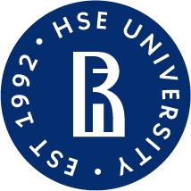
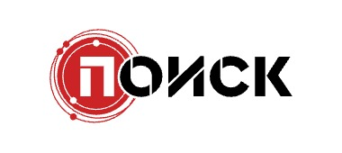
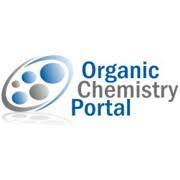
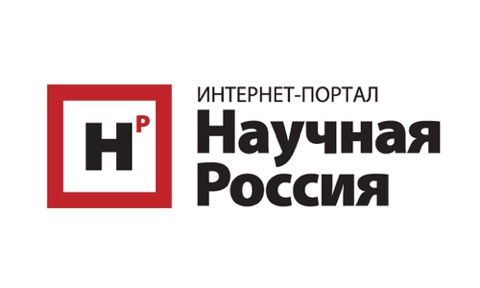
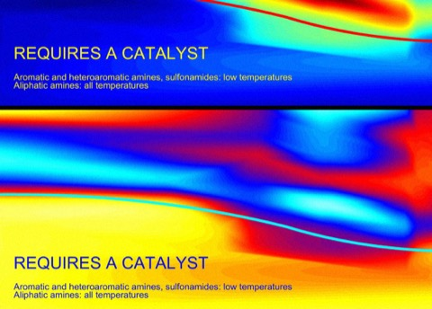
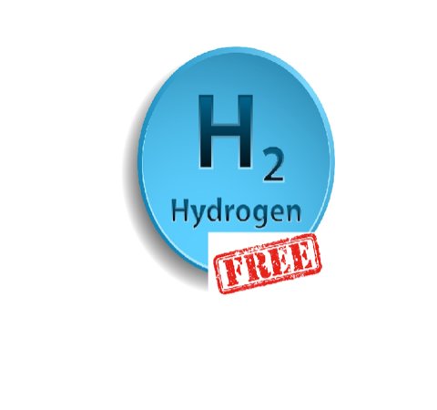

Media

Poisk News on our eco-friendly, solvent-based route to aniline derivatives

Scientific Russia on our single-step synthesis of amides that could make a lymphoma drug hundreds of times cheaper

Organic Chemistry Portal writes about our enhanced method of the Eschweiler-Clarke Reaction
Waste gases from steelmaking repurposed to prepare pharmaceutical

Russian media writes about synthesis of drugs from gaseous waste, which was proposed by us
Organic Chemistry Portal mentioned us in the article dedicated to Reductive Amination
Sodium Hypophosphite as a Bulk and Environmentally Friendly Reducing Agent in the Reductive Amination
Organic Chemistry Portal writes about an impact of fluoride additive in Michael addition studied in our article

We have found the ideal conditions for the hydrogen borrowing reaction. Interview.
HSE highlights our lab’s eco-friendly amine synthesis breakthrough
Interview with Denis Chusov about The Nobel Prize in chemistry in 2021

Interview with Fedor Kluev about his researches and with Denis Chusov.
Interview with Denis (gazeta.ru in Russian)
Russian journal "Chemistry and life" about our approach
